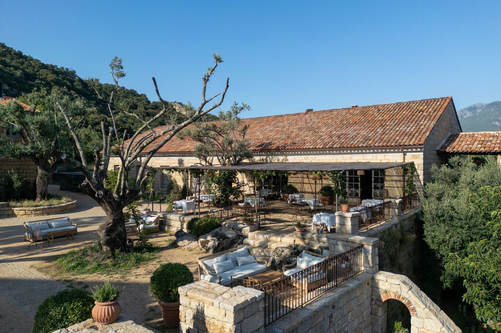
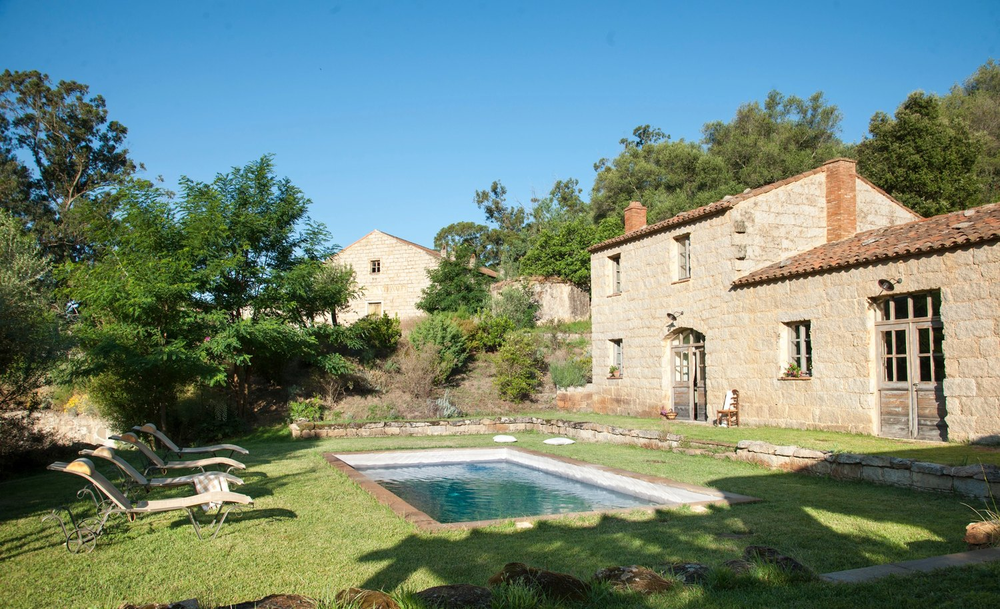
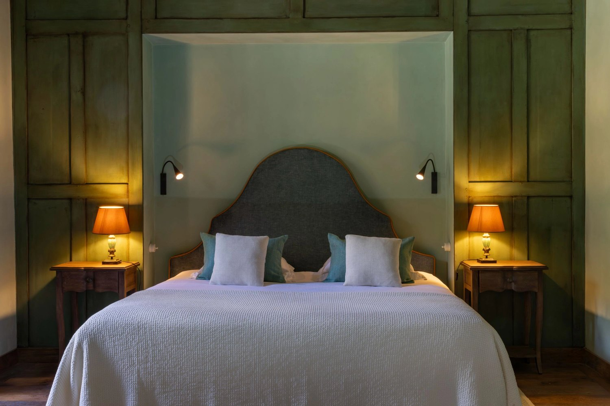
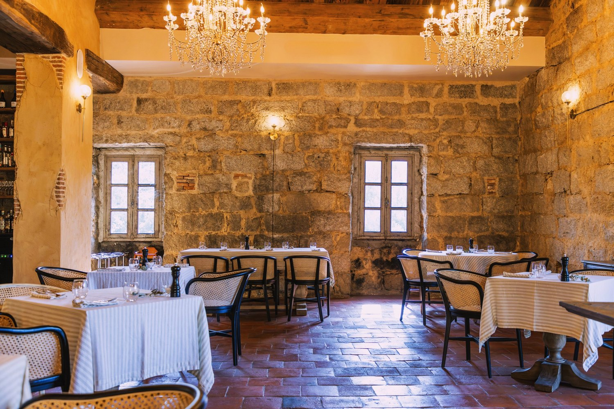
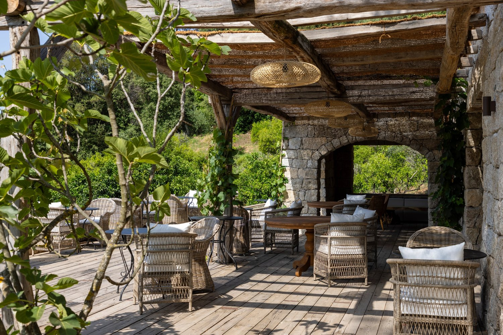

Le Hameau de Saparale, en Corse : un village du XIIIe siècle rendu à la vigne
Cinquante-deux hectares de vignes dans la vallée de l'Ortolo, un hameau que cent ouvriers ont habité, et une famille qui le relève depuis vingt-cinq ans.

Le hameau au pied du massif de Cagna. Photo : Le Hameau de Saparale, site officiel.
L'essentielCe qui distingue vraiment cette maison
- Ce n'est pas un hôtel bâti dans un vignoble, c'est un vignoble qui a rouvert son village. Le hameau date du XIIIe siècle et abritait plus de cent ouvriers de la vigne, avec poste, gendarmerie et chapelle.
- Une histoire de transmission, pas d'acquisition. Le domaine a été légué en 1975 à la gouvernante de la maison, Jacqueline Farinelli. C'est son petit-fils Philippe qui l'a relevé et a signé la première cuvée en 1998.
- Seize chambres et trois bergeries. Toutes différentes, dans un domaine de 52 hectares, face à L'Uomo du Cagna. Le spa, lui, n'existe pas encore.
Il y a en Corse des maisons qui vendent la nature et d'autres qui en viennent. Le Hameau de Saparale appartient à la seconde catégorie, et cela s'entend dès qu'on regarde ce qu'il était avant d'être un hôtel : un village de travail, au service d'un vignoble. Nous l'évaluons 8,9/10 au Score LMHS, avec un Indice Corse de 4,5/5, notre indice thématique pour cette page.
1845, 1900, 1975, 1998 : quatre dates qui font le domaine
Le domaine naît en 1845, quand Philippe de Rocca Serra, avocat, revient sur ses terres après plusieurs années passées en Afrique. Il plante cent hectares de vignes corses en plein maquis, avec une idée en tête : bâtir un grand domaine viticole. Un détail de ce passé africain a survécu à tout le reste : l'éléphant, emblème du domaine, que l'on retrouve aujourd'hui brodé sur les serviettes et les peignoirs. La vallée compte des sangliers et des lièvres, pas de pachyderme.
La réputation vient vite. En 1900, les vins de Saparale décrochent la médaille d'or à l'Exposition universelle de Paris. Puis tout s'arrête : le phylloxéra dans les années 1920, la guerre, le banditisme. Le hameau s'éteint.
La suite tient à une décision qu'on ne lit pas souvent dans l'histoire des grands domaines. En 1975, le dernier fils du fondateur lègue la propriété à sa gouvernante, Jacqueline Farinelli. Deux décennies plus tard, son petit-fils Philippe découvre le domaine, se forme à la viticulture, replante des cépages corses et signe sa première cuvée en 1998. Avec Julie Farinelli, il porte le projet depuis plus de vingt-cinq ans : bergeries transformées en villas, ouverture d'un hôtel de seize chambres, restaurant installé dans l'ancien chai, jardin botanique en hommage au goût du fondateur pour la nature et les voyages.

Une des piscines du domaine. Photo : Le Hameau de Saparale, site officiel.
Seize chambres, trois bergeries, et pas deux pareilles
La maison compte 16 chambres et suites, auxquelles s'ajoutent trois bergeries indépendantes avec piscine privée. Chaque chambre porte un nom et un caractère : Madame, La Suite Bleue, Magnolia, Sous les Tilleuls, La Tour. Certaines s'ouvrent de plain-pied sur une fontaine en pierre, d'autres disposent d'une terrasse ou d'un balcon sur les vignes.
Le détail qui dit le soin apporté à la restauration : les murs sont couverts de chaux teintée avec l'argile du domaine, un procédé qui signalait autrefois la richesse dans les maisons de maître corses. S'y ajoutent des boiseries patinées, des baignoires à pattes de lion, des meubles chinés d'époques différentes, des robinetteries anciennes et des savons artisanaux aux huiles essentielles. L'ensemble est harmonieux sans être surchargé, ce qui est plus difficile qu'il n'y paraît sur un bâti de cette nature.

Une des seize chambres, toutes différentes. Photo : Le Hameau de Saparale, site officiel.
Deux clés méritent d'être demandées nommément. Au dernier étage de la maison principale, la Master Suite de 85 m2 réunit un grand salon baigné de lumière, une salle de bains avec sauna privé, une vaste terrasse panoramique et un jacuzzi extérieur de type bain nordique. Et surtout, si la forme le permet, la chambre de la tour : on y monte par un escalier de pierre en colimaçon, comme dans un donjon, le salon et la salle de bains occupent le bas, la chambre en mezzanine ouvre sur une terrasse qui domine la place du hameau.
Sopravigna : le chai devenu salle à manger

La salle de Sopravigna, sous les voûtes de l'ancien chai. Photo : Le Hameau de Saparale, site officiel.
La table s'appelle Sopravigna et occupe l'ancien chai du domaine, sous voûtes de pierre. Le chef Jérémy Vivien se fournit chez les producteurs de la vallée et des alentours, et au potager de la maison. La cuisine est rustique, ancrée et généreuse, dans cet ordre.
Le service de midi joue la simplicité : produits emblématiques du terroir corse, légumes du potager, saucisses de porc nustrale. Le soir monte d'un cran sans jamais devenir illisible, avec par exemple un râble de lapin farci aux rognons et à l'anis vert et une polenta à l'estragon. Le plat qu'il ne faut pas manquer est le soufflé à la tomme de brebis affinée dans la vallée, la signature de la maison. La cave propose la dégustation des cuvées du domaine, ce qui referme la boucle : on boit ce qui pousse sous les fenêtres.
Le bien-être : ce qui existe, et ce qui est annoncé
Il faut être précis ici, parce que la confusion est facile. Ce qui existe aujourd'hui : une magistrale piscine en granit, un peu à l'écart, ouverte face à la montagne, qui est le point de vue le plus spectaculaire du domaine ; les piscines privées des trois bergeries ; le sauna privé et le jacuzzi extérieur de la Master Suite ; et le jardin botanique.
Ce qui n'existe pas encore : le spa. La maison annonce un spa sauvage sous les tonnelles, mais il n'est pas ouvert. Qui vient pour un séjour bien-être structuré doit le savoir avant de réserver, et regarder du côté de la Master Suite ou des bergeries, qui sont les seules clés à disposer d'un équipement en propre.

Une terrasse sous tonnelle. Photo : Le Hameau de Saparale, site officiel.
Le Hameau de Saparale en bref
| Adresse | Domaine Saparale, vallée de l'Ortolo, 20100 Sartène, Corse-du-Sud |
| Téléphone | +33 4 95 10 74 58 |
| Catégorie | n. c. La maison ne publie pas de classement en étoiles et se présente en hôtel de charme |
| Capacité | 16 chambres et suites, plus 3 bergeries indépendantes avec piscine privée |
| Domaine | 52 hectares de vignes, hameau du XIIIe siècle |
| Propriétaires | Julie et Philippe Farinelli, depuis plus de 25 ans |
| Table | Sopravigna, dans l'ancien chai, chef Jérémy Vivien |
| Bien-être | Piscine en granit, jardin botanique, sauna et jacuzzi dans la Master Suite. Spa annoncé, pas encore ouvert |
| Autres | Cave et dégustations, chapelle consacrée pour les mariages |
| Saison | Le hameau et le restaurant sont ouverts jusqu'au 2 novembre |
| Score LMHS | 8,9/10 · Indice Corse 4,5/5 |
Adresse et téléphone relevés le 3 septembre 2026 sur le site officiel de l'établissement. Aucun tarif n'est publié dans cette page, faute d'en trouver à la source.
Autour : Sartène, Roccapina, Cauria et l'Uomo du Cagna
La vallée de l'Ortolo n'est pas un point de chute, c'est une destination, et le domaine en fait la démonstration. Sartène est à quelques minutes, avec ses ruelles en granit et ses passages voûtés. La plage de Roccapina, dominée par son célèbre lion de pierre, est à quinze minutes. Le site préhistorique de Cauria et ses alignements de menhirs sont à trente minutes. Et Bonifacio et ses falaises ne sont pas loin.
Pour les marcheurs, la vue depuis le domaine dit déjà l'essentiel : elle porte sur L'Uomo du Cagna, sommet emblématique du sud de la Corse, reconnaissable à son rocher en équilibre qui évoque une silhouette humaine. Comptez 1 400 mètres de dénivelé et un sentier de vingt et un kilomètres, avec la mer en ligne de mire. Julie Farinelli est une traileuse aguerrie et connaît les plus beaux itinéraires : c'est une ressource qu'on ne trouve pas dans un hôtel ordinaire.
Pour qui cette maison est faite
Pour ceux qui viennent chercher le silence, les pierres et la vigne, et qui acceptent que ce soit exactement cela le programme. Le domaine est cerné d'hectares de nature sans âme qui vive, et c'est son intérêt autant que sa contrainte. Pour les amateurs de vin, ensuite, qui dorment ici au-dessus d'un vignoble dont ils boiront les cuvées le soir même. Pour les marcheurs enfin, avec un massif à la porte et une propriétaire qui en connaît les sentiers.
Ce n'est en revanche pas une adresse de bord de mer, malgré la réputation de l'île : Roccapina est à quinze minutes de voiture, et la voiture est indispensable. Ce n'est pas non plus une adresse de séjour bien-être tant que le spa annoncé n'aura pas ouvert. Et la saison est courte : la maison ferme après le 2 novembre.
Questions fréquentes sur le Hameau de Saparale
Combien de chambres compte le Hameau de Saparale ?
16 chambres et suites, auxquelles s'ajoutent trois bergeries indépendantes avec piscine privée. Chaque chambre porte un nom et un caractère propres : Madame, La Suite Bleue, Magnolia, Sous les Tilleuls, La Tour. La Master Suite occupe 85 m2 au dernier étage, avec sauna privé, terrasse panoramique et jacuzzi extérieur de type bain nordique.
Y a-t-il un spa au Hameau de Saparale ?
Pas encore. La maison annonce un spa sauvage sous les tonnelles, mais il n'est pas ouvert à ce jour. Ce qui existe : une magistrale piscine en granit face à la montagne, les piscines privées des trois bergeries, et le sauna privé ainsi que le jacuzzi extérieur de la Master Suite.
Quel est le restaurant du Hameau de Saparale ?
Sopravigna, installé dans l'ancien chai du domaine, sous le chef Jérémy Vivien. Cuisine rustique et généreuse, produits des producteurs de la vallée et légumes du potager. Le plat signature est le soufflé à la tomme de brebis affinée dans la vallée. La cave propose la dégustation des cuvées du domaine.
Quelle est l'histoire du domaine Saparale ?
Le hameau date du XIIIe siècle. Le domaine viticole est créé en 1845 par Philippe de Rocca Serra, avocat rentré d'Afrique, dont l'éléphant reste l'emblème. Les vins décrochent la médaille d'or à l'Exposition universelle de Paris en 1900, avant que le phylloxéra, la guerre et le banditisme n'éteignent l'activité. En 1975, le domaine est légué à la gouvernante de la maison, Jacqueline Farinelli ; son petit-fils Philippe le relève et signe la première cuvée en 1998.
Que faire autour du Hameau de Saparale ?
La vieille ville de Sartène, ses ruelles en granit et ses passages voûtés. La plage de Roccapina et son lion de pierre, à quinze minutes. Le site préhistorique de Cauria et ses alignements de menhirs, à trente minutes. Bonifacio et ses falaises. Et la randonnée vers L'Uomo du Cagna, 1 400 mètres de dénivelé sur un sentier de vingt et un kilomètres.
Le Hameau de Saparale est-il ouvert toute l'année ?
Non. Le hameau et le restaurant sont ouverts jusqu'au 2 novembre, avec une fermeture saisonnière ensuite. C'est un point à vérifier avant de réserver un séjour d'arrière-saison.
Le mot de SwannUne propriété léguée à sa gouvernante
On raconte volontiers les grands domaines par leurs acquéreurs. Celui-ci se raconte par une donation : en 1975, le dernier fils du fondateur lègue Saparale à sa gouvernante. C'est son petit-fils qui replantera les cépages et signera la première cuvée en 1998. Voilà pourquoi ce hameau ne ressemble à aucun autre projet hôtelier corse : il n'a pas été acheté pour devenir un hôtel, il a été rendu à la vigne, et l'hôtel est venu après. Cela s'entend dans les proportions, seize clés pour cinquante-deux hectares, et dans ce que la maison ne fait pas. Il n'y a pas encore de spa. On peut le regretter ; on peut aussi voir que rien ici n'a été bâclé pour aller plus vite.
Swann Bertaud, rédacteur hôtellerie de luxe
Méthode et sources
Avis documentaire. Nous n'avons pas séjourné dans cet établissement. Capacité, histoire du domaine, table, équipements et saison relevés le 3 septembre 2026. Adresse et téléphone vérifiés sur le site officiel de l'établissement. La maison ne publie pas de classement en étoiles et se présente en hôtel de charme : le tableau porte « n. c. » plutôt qu'un chiffre inventé. Aucun tarif n'est publié dans cette page : la maison n'en affiche pas sur son site, et nous ne reprenons pas un prix d'appel que nous ne pouvons pas vérifier à la source. Le Score LMHS sur 10 relève de la grille LMHS Destination ; l'Indice Corse sur 5 est un indice thématique propre à cette page, qui mesure l'ancrage territorial. Aucun partenariat commercial, aucune affiliation. Photographies : Le Hameau de Saparale, site officiel.
Pour aller plus loin
- Château la Commaraine, à Pommard, l'autre maison de nos avis qui dort dans ses propres vignes
- San Montano Resort & Spa, à Ischia, une autre île méditerranéenne passée au Protocole LMHS
- Les 50 meilleurs hôtels et spas de France, palmarès national 2026
- Notre méthode, les grilles de notation et les règles d'indépendance